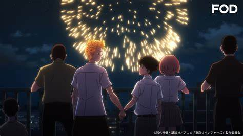

Tokyo Revengers
- Tipo: Serie
- Genero: Shōnen
- Studio: MAPPA
- Emitido: Abr 11 de 2021 a Sep 18 de 2021
- Estado: Concluido
La vida de Takemichi Hanagaki está en su punto más bajo. Justo cuando pensaba que no podía empeorar, se entera de que Hinata Tachibana, su ex novia, fue asesinada por la Tokyo Manji Gang: un grupo de criminales viciosos que ha estado perturbando la paz de la sociedad durante bastante tiempo. Preguntándose dónde salió todo mal, Takemichi de repente se encuentra viajando a través del tiempo, terminando 12 años en el pasado, cuando todavía estaba en una relación con Hinata. Al darse cuenta de que tiene la oportunidad de salvarla, Takemichi decide infiltrarse en la Tokyo Manji Gang y subir de rango para reescribir el futuro y salvar a Hinata de su trágico destino.
CAPITULOS
